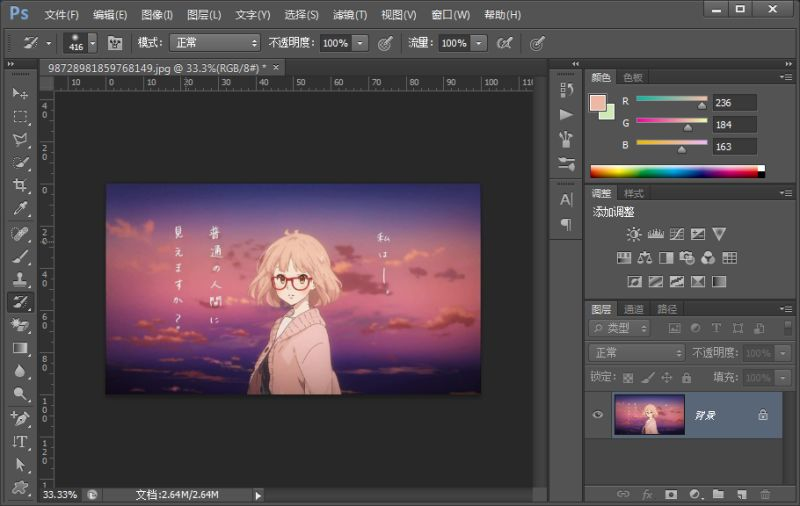
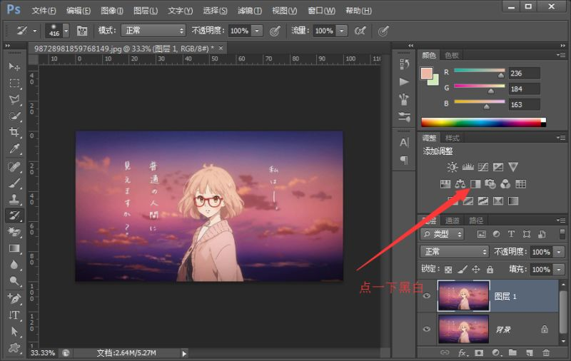
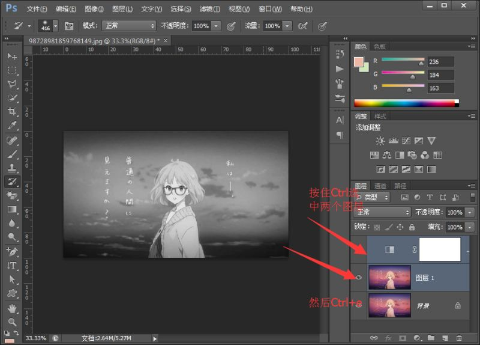
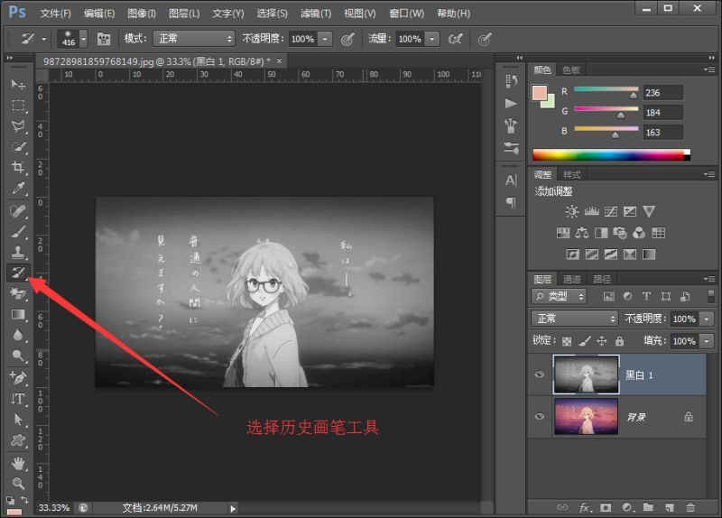

这一期我来教大家做个好玩的东西，用历史画笔工具，做出一个特别的效果，当然啦，还可以学到新知识。
历史画笔工具的使用
首先打开把图片拖进ps中。

选中第一个图层，Ctrl+j(复制图层快捷键)复制一个图层
选中第二个图层，然后找到黑白按钮，点击，画面一下子就黑白了，没关系，我们就是要黑白。
然后我们按住Ctrl键，选中黑白图层和复制出来的图层，Ctrl+e（合并选中图层）。
接下来我们选中历史画笔工具，重要任务果然是最后才登场的啊，把需要显示的地方在画面上进行涂抹就行啦。
是不是很简单呢（不是），快来试试吧。